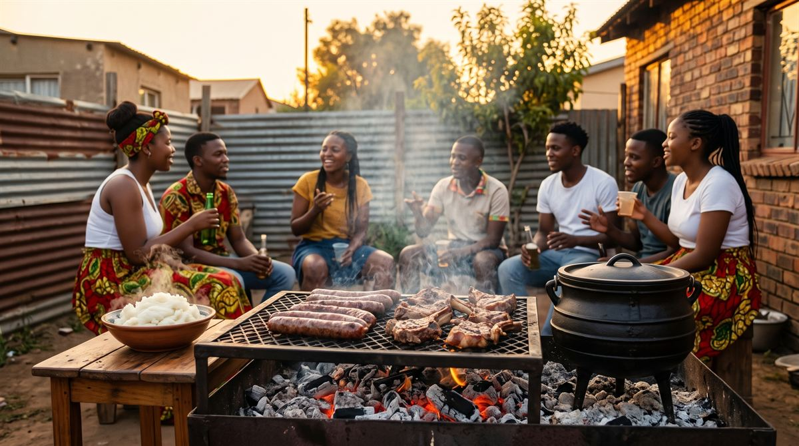
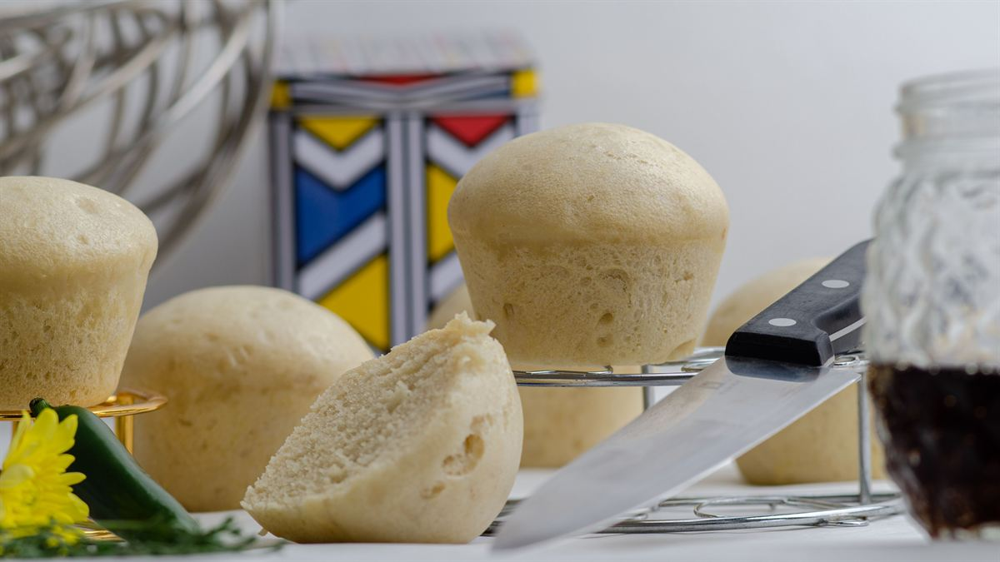
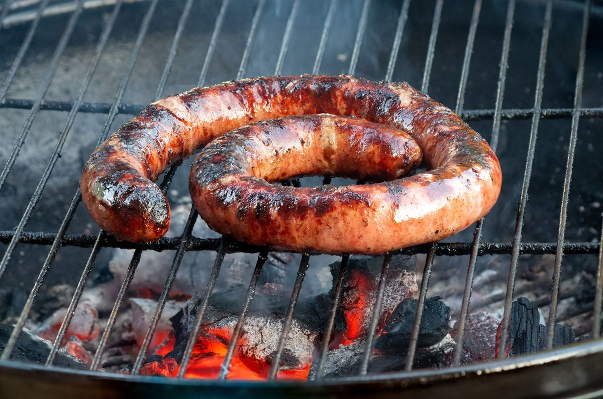
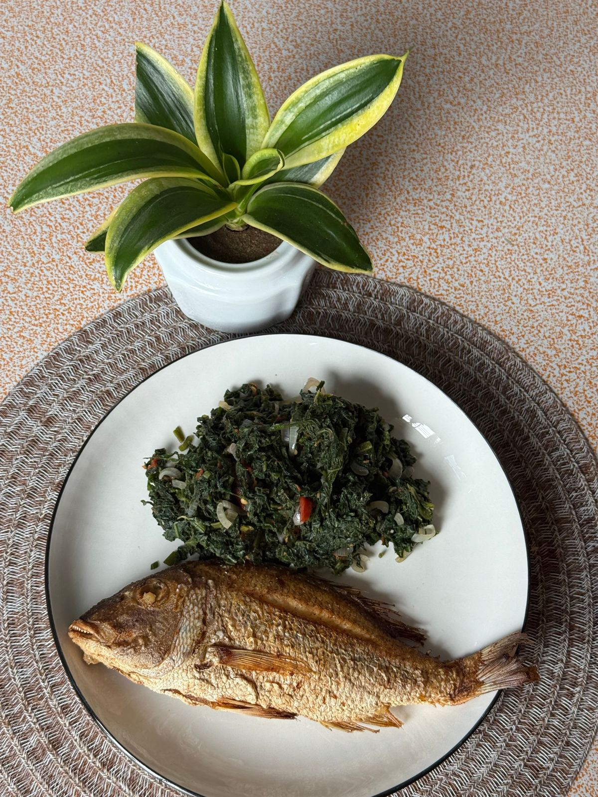

Chisanyama / Braai
Fire-grilled meat with pap and chakalaka.
View recipeFire, maize and sharing. Food here is cooked slowly, eaten together and almost always served with pap.
Countries covered: South Africa, Zimbabwe, Botswana, Zambia, Mozambique, Namibia, Lesotho, Eswatini, Malawi.
Weekends and celebrations often mean meat cooked over an open fire, with friends standing around the grill. Township street food like the splathlo grew out of cheap, filling ingredients and big flavour. Stews are simmered for hours in a three-legged potjie pot.


Soft steamed bread, served with stews and chakalaka.

The star of every braai.

Morogo and covo, cooked with onion and tomato.

Small, fiery chillies behind peri-peri sauces and marinades.
Wood or charcoal, cooked low and shared off the grid.
Layered stew in a cast-iron pot over coals, never stirred.
Maize meal stirred hard into a thick, smooth pap.
Fire-grilled meat with pap and chakalaka.
View recipe
The township quarter loaf, stacked high.
View recipe